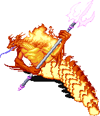
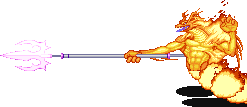
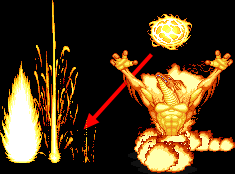
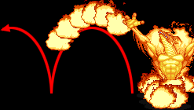
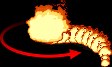
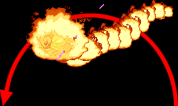
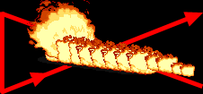

FLAME SALAMANDER
|  화염의 세계 (9-A) 보스 '플레임 샐러맨더' |
기본 정보
클리어 시간 측정의 시작 시점
플레이어가 움직일 수 있을 때 부터
최단 시간 클리어 기록
시프/드워프 4:49 |
|||||||||
드랍 가능한 아이템 - 돈 + 점수 아이템 + 그외 아이템의 구성으로 떨어진다.
돈 : 5sp x3 + 1spx3 (18sp) / 10sp x5 (50sp) / 50sp x3 (150sp) / 100sp x2 (200sp) / 500sp x1 (500sp)
기타 : 스크롤(scroll) 최대 8레벨
| 점수 아이템 : | |
| 반지류 : | |
| 도구류 : | |
| 완드류 : | |
| 장비류 : | |
근육질의 인간형의 상체에 매와 같은 얼굴을 가지고 있는 불타는 차원의 생명체이다. 허리 아래부터는 뱀처럼 구불구불하며 붉고 검은 비늘로 덮혀있다. 팔과 등뼈와 머리엔 불꽃과 같은 돌기가 나 있다. 무척 뜨거운 금속 창을 들고 다니는 경우가 많다. 자기 중심적이고 잔인하며 남을 괴롭히기를 좋아한다. 무성생식을 하는데 매 10년마다 유충을 생산하며 불구덩이 속에서 부화해서 성장한다.
물질 세계(현실 세계)로 소환된 샐러맨더는 금속을 다루는 대장장이 일을 도와주는 경우가 많은데 그들이 내뿜는 열기는 최고수준의 금속 가공술을 가능케 해 준다.
이름과 겉모습에서 알 수 있듯이 불에 휩싸인 뜨거운 보스다. 일반 공격으로는 잘 안쓰러지고 슬쩍 닿기만 해도 불타서 쓰러지기 때문에 그냥 싸우라면 참 어렵다. 그러나 일명 '속성검'이라 불리는 서리의 검/화염의 검/폭풍의 검에 아주 취약한 모습을 보여준다.
물질 세계(현실 세계)로 소환된 샐러맨더는 금속을 다루는 대장장이 일을 도와주는 경우가 많은데 그들이 내뿜는 열기는 최고수준의 금속 가공술을 가능케 해 준다.
이름과 겉모습에서 알 수 있듯이 불에 휩싸인 뜨거운 보스다. 일반 공격으로는 잘 안쓰러지고 슬쩍 닿기만 해도 불타서 쓰러지기 때문에 그냥 싸우라면 참 어렵다. 그러나 일명 '속성검'이라 불리는 서리의 검/화염의 검/폭풍의 검에 아주 취약한 모습을 보여준다.
주요 특성
▶ 온몸이 불길에 휩싸여 있기 때문에 약간이라도 닿으면 불타면서 쓰러지고 만다. 불 내성의 반지가 있다 하더라도 막을 수 없다. 또한 화염의 검을 제외한 모든 불의 속성을 지닌 아이템/주문이 통하지 않는다.
▶ 일반 공격을 연속으로 8번을 맞거나 크리티컬이 나오거나 몇몇 특정 공격을 맞으면 쓰러진다. 그러나 일반적으로 맞으면서 플레이어 쪽으로 끌려오는 경우가 있어서 그냥 때리다가는 몸체에 닿을 가능성이 높다. 단, 8히트를 넘기더라도 샐러맨더가 공중에 떠 있는 상태일 때 계속 공격을 성공시킬 수 있다.
▶ 몸을 앞뒤로 심하게 흔들고, 자리 이동을 할 때 돌진이나 점프를 제외하면 조금씩 미묘하게 움직이기 때문에 종잡을 수 없다. 일반 공격은 맞는 경우 앞뒤로 더욱 심하게 흔드는 경우도 있어서 위험하다.
▶ 몸체에만 판정이 있고 꼬리로 몸을 지탱하고 있기 때문에 타점이 높은 편이다. 경우에 따라 상단 공격이 가능하지 않은 공격은 빗나갈 가능성도 있다.
▶ 화염의 검, 서리의 검, 폭풍의 검 (이하 속성검)에 맞을 경우 바로 쓰러지는데 공중에 떴을 때도 연속해서 공격을 성공시킬 수 있다. 따라서 이들 속성검을 이용하면 어렵지 않게 제압 할 수 있다.
★ 모든 몸체로 부딪치는 공격은 어떤 종류의 방패라도 가드 할 수 있다. -꼬리 돌리기는 제외- 심지어는 그냥 서 있는 플레임 샐러맨더의 몸체에 닿는 것 마져도 가드 할 수 있다. 가드하다가 구석에 몰리면 한참동안 강제로 가드만 신나게 하는 경우도 발생한다.
▶ 일반 공격을 연속으로 8번을 맞거나 크리티컬이 나오거나 몇몇 특정 공격을 맞으면 쓰러진다. 그러나 일반적으로 맞으면서 플레이어 쪽으로 끌려오는 경우가 있어서 그냥 때리다가는 몸체에 닿을 가능성이 높다. 단, 8히트를 넘기더라도 샐러맨더가 공중에 떠 있는 상태일 때 계속 공격을 성공시킬 수 있다.
▶ 몸을 앞뒤로 심하게 흔들고, 자리 이동을 할 때 돌진이나 점프를 제외하면 조금씩 미묘하게 움직이기 때문에 종잡을 수 없다. 일반 공격은 맞는 경우 앞뒤로 더욱 심하게 흔드는 경우도 있어서 위험하다.
▶ 몸체에만 판정이 있고 꼬리로 몸을 지탱하고 있기 때문에 타점이 높은 편이다. 경우에 따라 상단 공격이 가능하지 않은 공격은 빗나갈 가능성도 있다.
▶ 화염의 검, 서리의 검, 폭풍의 검 (이하 속성검)에 맞을 경우 바로 쓰러지는데 공중에 떴을 때도 연속해서 공격을 성공시킬 수 있다. 따라서 이들 속성검을 이용하면 어렵지 않게 제압 할 수 있다.
★ 모든 몸체로 부딪치는 공격은 어떤 종류의 방패라도 가드 할 수 있다. -꼬리 돌리기는 제외- 심지어는 그냥 서 있는 플레임 샐러맨더의 몸체에 닿는 것 마져도 가드 할 수 있다. 가드하다가 구석에 몰리면 한참동안 강제로 가드만 신나게 하는 경우도 발생한다.
패턴 분석
※ 붉은색은 파이터가 입는 데미지, 푸른색은 매직 유저가 입는 데미지.
클레릭/드워프는 파이터에 가까운 데미지를, 시프/엘프는 매직 유저에 가까운 데미지를 입는다.
클레릭/드워프는 파이터에 가까운 데미지를, 시프/엘프는 매직 유저에 가까운 데미지를 입는다.
| 찌르기 (22/34) | |
|  | 들고 있는 창으로 푹 찌른다. 은근히 리치도 길고 빠른 편이라서 순간 당하기 쉽다. 맞을 경우 쓰러지게 된다. 대신 판정범위가 위 아래로는 좁아서 일직선상에만 있지 않는다면 맞지 않는다. |
| 파이어 볼 1 (15/23) | |
| 배경에서 파이어 볼을 5개 불러온 후 급강하 시킨다. 내려오는 순간에 점프를 하면 피할 수 있다. 화염의 방패가 있으면 가드 할 수도 있지만 머리나 등뒤로 지나가거나 하면 가드가 안될 수 있으니 점프로 피하는게 낫다. 물론 불 내성의 반지가 있다면 신경쓰지 않아도 된다. |
|
| 파이어 볼 2 (22/34) | |
|  | 머리 위로 커다란 파이어 볼을 생성한 후 바닥에 던지는데 마치 LB오일 처럼 불기둥이 일직선으로 생성된다. 뻔히 보이는 느린 공격이라 피하기 무척 쉽다. 화염의 방패로 가드할 수 있으며 불 내성의 반지가 있다면 신경쓰지 않아도 된다. |
| 인페르노 (14/21) | |
|  | 꾸물거리는 기다란 불길을 일으킨다. 불길은 지면에 튕기며 샐러맨더의 앞 뒤로 지나간다. 약간 빠른 편이니 주의하도록 한다. 화염의 방패로 가드할 수 있으며 불 내성의 반지가 있다면 신경쓰지 않아도 된다. |
| 꼬리 공격 (17/24) | |
|  | 몸을 움추린 후 꼬리를 빙글빙글 돌린다. 순간 공격하기 때문에 맞기 쉽다. 쓰러졌다가 일어날 때도 나오는 공격이다. 불 내성의 반지가 있다면 신경쓰지 않아도 된다. |
| 점프 (17/24) | |
|  | 몸을 움추린 후 꼬리를 빙글빙글 돌리면서 점프를 한다. 예고없이 날아오는 공격이라 방심하다가 맞기 딱 좋다. 쓰러졌다가 일어날 때 잘못 공격하면 공격을 맞으면서 이 공격을 해오는 경우도 있다. 가드를 할 수 있긴 한데 그보단 위 아래로 피하도록 하자. |
| 몸통 박치기 (17/24) | |
|  | 몸을 움추린 후 스테이지를 대각선으로 가로지르며 꽤 빠르게 왔다갔다 한다. 닿으면 쓰러지니 가장 성가신 공격이다. 속성검으로 제압하거나 가드를 하도록 하자. |
헬 하운드
헬 하운드가 한마리씩 나와서 여로모로 방해를 한다. 1인의 경우 총 10마리, 2인의 경우 20마리, 3인 이상의 경우 총 30마리가 나온다. 불 내성의 반지의 반지가 없다면 브레쓰 때문에 고생 좀 할 것이다. 반지가 있어도 이놈들의 돌진은 은근히 신경 쓰이게 된다.
공통 공략법
◎ 불 내성의 반지를 가지고 오는게 좋다.
찌르기/몸통 부딪치기를 제외한 모든 공격으로 부터 안전하며 또한 같이 나오는 헬 하운드의 브레쓰 공격을 무시해도 된다. 다만 시프를 제외하면 이 스테이지에서 불 내성의 반지를 고정적으로 얻을 수 있는 클래스가 없다. 전 클래스 공통으로 상자를 열면 확률에 따라 얻을 수 있긴 하지만 안나오는 경우도 많으니 이곳으로 올 생각을 했다면 미리 챙겨오는 것이 좋다.
◎ 속성검으로 구석에 몰아넣고 패면 된다.
같이 나오는 헬 하운드의 돌진이나 물기만 조심하면 된다. (불 내성의 반지가 없다면 브레쓰도 조심.)
이 스테이지에서 파이터/시프/드워프/엘프의 경우 서리의 검을 고정적으로 얻을 수 있으니 따로 챙겨오지 않았다면 그것을 이용하면 된다.
매직 유저는 속성검을 쓸 수는 없지만 대신 완드류와 주문을 이용해서 제압 할 수 있다.
문제가 되는건 클레릭인데 속성검도 쓸 수 없고 매직 유저처럼 완드/주문을 쓸 수 있는 것도 아니라서 결국은 그냥 일반 공격으로 싸워야 된다. 물론 방법이 없는건 아니지만 고생을 할 수 밖에 없다는건 분명하다.
찌르기/몸통 부딪치기를 제외한 모든 공격으로 부터 안전하며 또한 같이 나오는 헬 하운드의 브레쓰 공격을 무시해도 된다. 다만 시프를 제외하면 이 스테이지에서 불 내성의 반지를 고정적으로 얻을 수 있는 클래스가 없다. 전 클래스 공통으로 상자를 열면 확률에 따라 얻을 수 있긴 하지만 안나오는 경우도 많으니 이곳으로 올 생각을 했다면 미리 챙겨오는 것이 좋다.
◎ 속성검으로 구석에 몰아넣고 패면 된다.
같이 나오는 헬 하운드의 돌진이나 물기만 조심하면 된다. (불 내성의 반지가 없다면 브레쓰도 조심.)
이 스테이지에서 파이터/시프/드워프/엘프의 경우 서리의 검을 고정적으로 얻을 수 있으니 따로 챙겨오지 않았다면 그것을 이용하면 된다.
매직 유저는 속성검을 쓸 수는 없지만 대신 완드류와 주문을 이용해서 제압 할 수 있다.
문제가 되는건 클레릭인데 속성검도 쓸 수 없고 매직 유저처럼 완드/주문을 쓸 수 있는 것도 아니라서 결국은 그냥 일반 공격으로 싸워야 된다. 물론 방법이 없는건 아니지만 고생을 할 수 밖에 없다는건 분명하다.
그런데 이것을 봐줘. 이것을 어떻게 생각해?
◎ 세가지 속성검에 관한 이야기
먼저 각 속성검을 들고 공략하는 동영상을 보도록 하자. Kayla양이 수고를 해 줄것이다.
서리의 검 (4:19)
화염의 검 (4:35)
폭풍의 검 (4:35)
보면 서리의 검이 가장 오래 걸린다는 걸 알 수 있다. 반면 화염의 검은 의외로 빨리 잡는다.
이유는? 서리의 검은 데미지가 대폭 감소 해 버리고 화염의 검은 데미지가 증가하기 때문이다.
기본 데미지를 보도록 하자. 서리의 검은 20, 화염의 검은 15, 폭풍의 검은 18이다.
그러나 플레임 샐러맨더를 가격 할 경우 화염의 검은 15에서 18로 증가하는 반면, 서리의 검은 20에서 10으로 오히려 대폭 감소한다. 폭풍의 검은 변화가 없다.
상극의 속성을 가진 서리의 검은 데미지가 감소하고 분명히 전혀 통하지 않을 것 같은 속성의 화염의 검은 오히려 데미지가 증가한다? - 분명 헬 하운드에게는 데미지가 엄청 감소한다.- 적어도 플레임 샐러맨더와의 싸움만 놓고 보면 서리의 검이 가장 안좋다.
캡콤의 의도가 무엇인지는 모르겠지만 참 오묘한 조화라 할 수 있다.
먼저 각 속성검을 들고 공략하는 동영상을 보도록 하자. Kayla양이 수고를 해 줄것이다.
서리의 검 (4:19)
화염의 검 (4:35)
폭풍의 검 (4:35)
보면 서리의 검이 가장 오래 걸린다는 걸 알 수 있다. 반면 화염의 검은 의외로 빨리 잡는다.
이유는? 서리의 검은 데미지가 대폭 감소 해 버리고 화염의 검은 데미지가 증가하기 때문이다.
기본 데미지를 보도록 하자. 서리의 검은 20, 화염의 검은 15, 폭풍의 검은 18이다.
그러나 플레임 샐러맨더를 가격 할 경우 화염의 검은 15에서 18로 증가하는 반면, 서리의 검은 20에서 10으로 오히려 대폭 감소한다. 폭풍의 검은 변화가 없다.
상극의 속성을 가진 서리의 검은 데미지가 감소하고 분명히 전혀 통하지 않을 것 같은 속성의 화염의 검은 오히려 데미지가 증가한다? - 분명 헬 하운드에게는 데미지가 엄청 감소한다.- 적어도 플레임 샐러맨더와의 싸움만 놓고 보면 서리의 검이 가장 안좋다.
캡콤의 의도가 무엇인지는 모르겠지만 참 오묘한 조화라 할 수 있다.